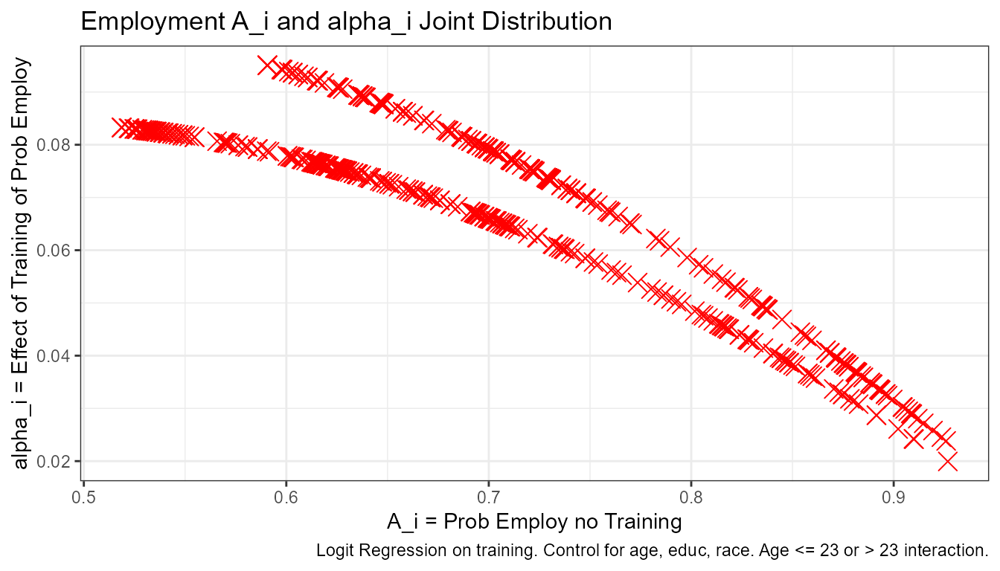
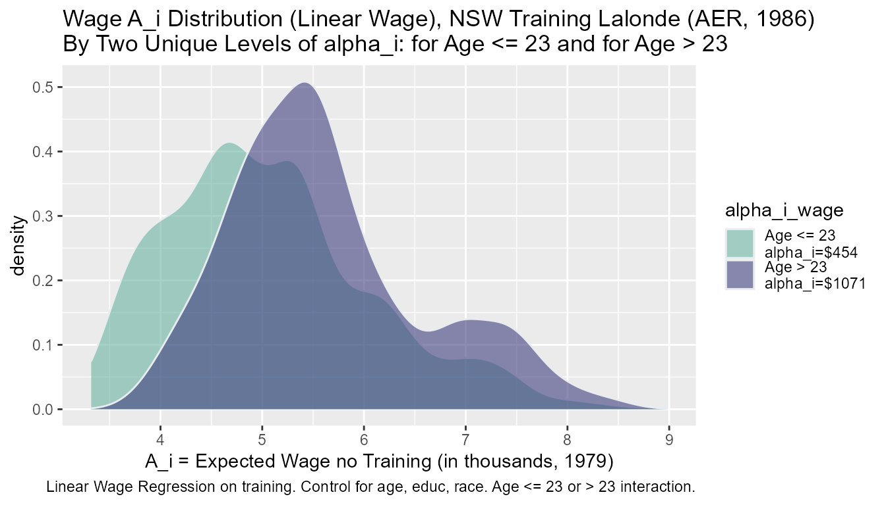
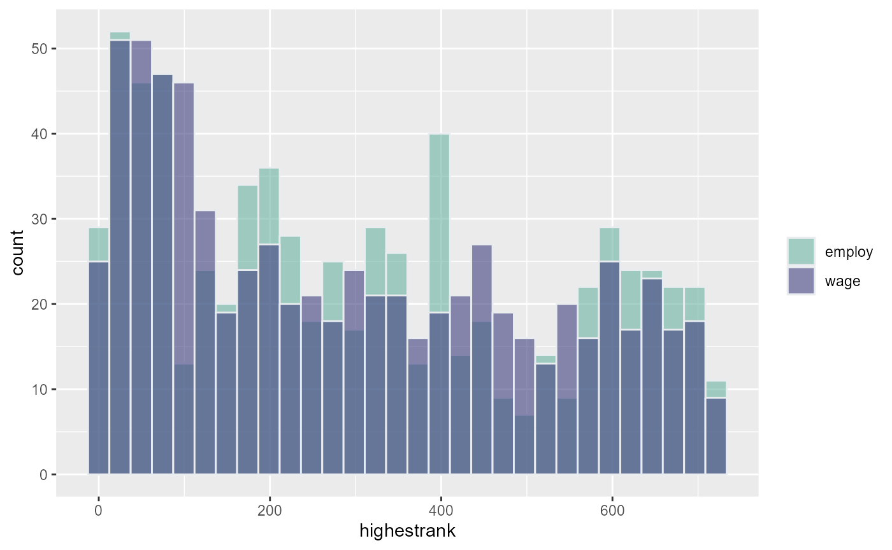
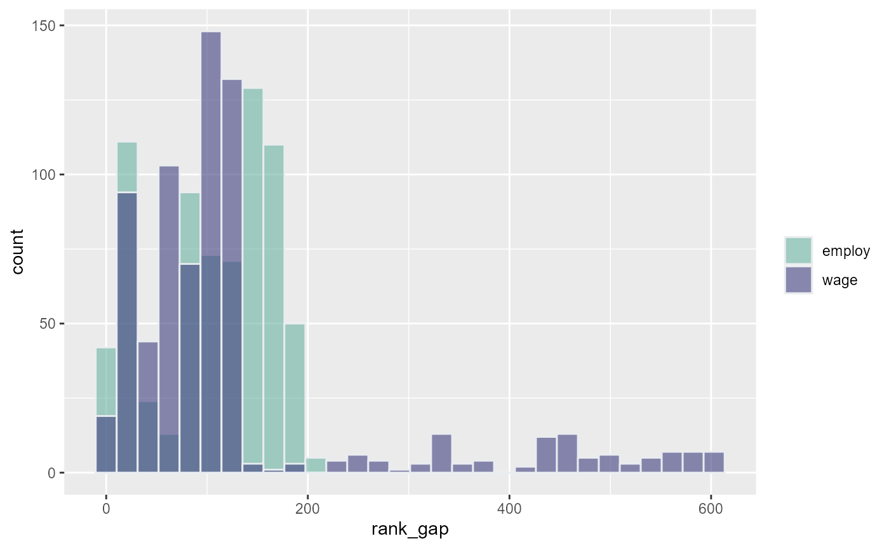

Wage and Employment Comparison Binary Allocation Lalonde Training Example
Source:vignettes/ffv_opt_sobin_rkone_allrw_training.Rmd
ffv_opt_sobin_rkone_allrw_training.RmdTest binary allocation queue with Lalonde training dataset. There are 722 observations, 297 in the treatment group, 425 in the control group.
Already completed optimal ranking analysis and regressions for wage and employment. Here, I combine the results together and generate some joint graphs analyzing:
- The relationship between expected probability of employment and wage (\(A_i\)) without training, and the expected return to training for employment and wage (\(\alpha_i\)).
- For each individual, does their optimal allocation ranking change under the Rawlsian to Utilitarian planner? For wage vs employment based rankings
- Who are those ranked in top 10 to receive? Along the spectrum
- Resource Equivalent Variation along the spectrum
Merge the Wage and Employmennt Rsults
Generate four categories by initial height and mother’s education levels combinations.
spt_img_save <- '../_img/' spt_img_save_draft <- 'C:/Users/fan/Documents/Dropbox (UH-ECON)/repos/HgtOptiAlloDraft/_img/'
# Load Data data(df_opt_lalonde_training) data(df_opt_lalonde_training_wage) data(df_opt_lalonde_training_employ) data(df_opt_lalonde_training_empage) # dfj, dataframe joint dfj <- df_opt_lalonde_training_employ %>% left_join(df_opt_lalonde_training_wage, by = 'id') %>% left_join(df_opt_lalonde_training_empage, by = 'id') %>% left_join(df_opt_lalonde_training %>% rename(id=X) %>% select(id, re74, re75))
## Joining, by = "id"# drop the .y variables, clean the .x out dfj <- dfj %>% select(-contains(".y"), -contains(".x")) # %>% # rename_at(vars(ends_with(".x")), funs(str_replace(., ".x", ""))) # order and organize variables dfj <- dfj %>% select(id, starts_with("A_"), starts_with("alpha_"), starts_with("beta_"), contains("rank"), contains("rho"), everything()) # treatment column to numeric dfj$trt <- as.numeric(dfj$trt) - 1 # Summarize # str(dfj) summary(dfj)
## id A_i_employ A_i_wage A_i_empage
## Min. : 1.0 Min. :0.5186 Min. :3.319 Min. :0.6514
## 1st Qu.: 181.2 1st Qu.:0.6271 1st Qu.:4.466 1st Qu.:0.6604
## Median : 361.5 Median :0.6994 Median :5.036 Median :0.7063
## Mean : 854.4 Mean :0.7004 Mean :5.160 Mean :0.6965
## 3rd Qu.:1458.5 3rd Qu.:0.7432 3rd Qu.:5.735 3rd Qu.:0.7311
## Max. :4110.0 Max. :0.9267 Max. :8.980 Max. :0.7987
##
## alpha_i_employ alpha_i_wage alpha_i_empage beta_i_employ
## Min. :0.01994 Min. :0.3794 Min. :0.04831 Min. :0.001385
## 1st Qu.:0.06453 1st Qu.:0.3794 1st Qu.:0.07047 1st Qu.:0.001385
## Median :0.07509 Median :0.3794 Median :0.08088 Median :0.001385
## Mean :0.06926 Mean :0.4928 Mean :0.07779 Mean :0.001385
## 3rd Qu.:0.08062 3rd Qu.:0.3794 3rd Qu.:0.08571 3rd Qu.:0.001385
## Max. :0.09506 Max. :1.0795 Max. :0.09012 Max. :0.001385
##
## beta_i_wage beta_i_empage rank_min_employ rank_max_employ
## Min. :0.001385 Min. :0.001385 Min. : 88 Min. : 1.00
## 1st Qu.:0.001385 1st Qu.:0.001385 1st Qu.:262 1st Qu.: 99.25
## Median :0.001385 Median :0.001385 Median :430 Median :273.00
## Mean :0.001385 Mean :0.001385 Mean :413 Mean :307.39
## 3rd Qu.:0.001385 3rd Qu.:0.001385 3rd Qu.:554 3rd Qu.:493.00
## Max. :0.001385 Max. :0.001385 Max. :722 Max. :722.00
##
## avg_rank_employ rank_min_wage rank_max_wage avg_rank_wage
## Min. : 37.63 Min. : 75.0 Min. : 1.00 Min. : 21.1
## 1st Qu.:178.53 1st Qu.:277.0 1st Qu.: 90.25 1st Qu.:199.0
## Median :356.60 Median :429.0 Median :260.00 Median :338.8
## Mean :360.21 Mean :425.6 Mean :294.81 Mean :360.2
## 3rd Qu.:528.20 3rd Qu.:575.0 3rd Qu.:473.00 3rd Qu.:519.4
## Max. :722.00 Max. :722.0 Max. :722.00 Max. :722.0
##
## rank_min_empage rank_max_empage avg_rank_empage rho_c1_rk_employ
## Min. :343.0 Min. : 1 Min. :127.6 Min. : 1.0
## 1st Qu.:429.0 1st Qu.: 84 1st Qu.:256.9 1st Qu.:177.5
## Median :528.0 Median :179 Median :333.1 Median :354.0
## Mean :517.5 Mean :163 Mean :340.3 Mean :360.2
## 3rd Qu.:591.0 3rd Qu.:245 3rd Qu.:430.4 3rd Qu.:540.0
## Max. :722.0 Max. :722 Max. :722.0 Max. :722.0
##
## rho_c2_rk_employ rho_c3_rk_employ rho_c4_rk_employ rho_c5_rk_employ
## Min. : 1.0 Min. : 1.0 Min. : 1.0 Min. : 1.0
## 1st Qu.:177.5 1st Qu.:177.0 1st Qu.:181.0 1st Qu.:181.2
## Median :358.0 Median :358.0 Median :358.0 Median :359.0
## Mean :360.2 Mean :360.2 Mean :360.2 Mean :360.2
## 3rd Qu.:540.0 3rd Qu.:540.0 3rd Qu.:540.0 3rd Qu.:540.0
## Max. :722.0 Max. :722.0 Max. :722.0 Max. :722.0
##
## rho_c6_rk_employ rho_c7_rk_employ rho_c8_rk_employ rho_c9_rk_employ
## Min. : 1.0 Min. : 1.0 Min. : 1.0 Min. : 1.0
## 1st Qu.:181.2 1st Qu.:181.2 1st Qu.:181.2 1st Qu.:178.0
## Median :359.0 Median :359.0 Median :352.0 Median :360.0
## Mean :360.2 Mean :360.2 Mean :360.2 Mean :360.2
## 3rd Qu.:540.0 3rd Qu.:541.2 3rd Qu.:541.2 3rd Qu.:541.2
## Max. :722.0 Max. :722.0 Max. :722.0 Max. :722.0
##
## rho_c10_rk_employ rho_c11_rk_employ rho_c12_rk_employ rho_c13_rk_employ
## Min. : 1.0 Min. : 1.0 Min. : 1.0 Min. : 1.0
## 1st Qu.:181.0 1st Qu.:178.0 1st Qu.:181.0 1st Qu.:181.2
## Median :361.5 Median :357.0 Median :361.0 Median :361.5
## Mean :360.2 Mean :360.2 Mean :360.2 Mean :360.2
## 3rd Qu.:540.0 3rd Qu.:541.0 3rd Qu.:541.8 3rd Qu.:541.8
## Max. :722.0 Max. :722.0 Max. :722.0 Max. :722.0
##
## rho_c14_rk_employ rho_c15_rk_employ rho_c16_rk_employ rho_c17_rk_employ
## Min. : 1.0 Min. : 1.0 Min. : 1.0 Min. : 1.0
## 1st Qu.:181.2 1st Qu.:181.2 1st Qu.:181.2 1st Qu.:181.0
## Median :352.0 Median :354.0 Median :361.5 Median :360.0
## Mean :360.2 Mean :360.2 Mean :360.2 Mean :360.2
## 3rd Qu.:541.8 3rd Qu.:541.8 3rd Qu.:541.8 3rd Qu.:541.0
## Max. :722.0 Max. :722.0 Max. :722.0 Max. :722.0
##
## rho_c18_rk_employ rho_c19_rk_employ rho_c20_rk_employ rho_c21_rk_employ
## Min. : 1.0 Min. : 1.0 Min. : 1.0 Min. : 1.0
## 1st Qu.:179.0 1st Qu.:180.0 1st Qu.:180.0 1st Qu.:181.0
## Median :360.0 Median :359.0 Median :361.0 Median :358.0
## Mean :360.2 Mean :360.2 Mean :360.2 Mean :360.2
## 3rd Qu.:541.0 3rd Qu.:541.8 3rd Qu.:541.0 3rd Qu.:541.0
## Max. :722.0 Max. :722.0 Max. :722.0 Max. :722.0
##
## rho_c22_rk_employ rho_c23_rk_employ rho_c24_rk_employ rho_c25_rk_employ
## Min. : 1.0 Min. : 1.0 Min. : 1.0 Min. : 1.0
## 1st Qu.:181.0 1st Qu.:181.0 1st Qu.:181.0 1st Qu.:181.0
## Median :357.0 Median :360.0 Median :361.5 Median :361.5
## Mean :360.2 Mean :360.2 Mean :360.2 Mean :360.2
## 3rd Qu.:541.2 3rd Qu.:541.2 3rd Qu.:534.0 3rd Qu.:535.0
## Max. :722.0 Max. :722.0 Max. :722.0 Max. :722.0
##
## rho_c26_rk_employ rho_c27_rk_employ rho_c28_rk_employ rho_c29_rk_employ
## Min. : 1.0 Min. : 1.0 Min. : 1.0 Min. : 1.0
## 1st Qu.:180.5 1st Qu.:180.5 1st Qu.:180.5 1st Qu.:180.5
## Median :361.5 Median :361.5 Median :361.5 Median :361.5
## Mean :360.2 Mean :360.2 Mean :360.2 Mean :360.2
## 3rd Qu.:535.0 3rd Qu.:536.0 3rd Qu.:536.0 3rd Qu.:536.0
## Max. :722.0 Max. :722.0 Max. :722.0 Max. :722.0
##
## rho_c30_rk_employ rho_c1_rk_wage rho_c2_rk_wage rho_c3_rk_wage
## Min. : 1.0 Min. : 1.0 Min. : 1.0 Min. : 1.0
## 1st Qu.:180.5 1st Qu.:181.2 1st Qu.:181.2 1st Qu.:181.2
## Median :361.5 Median :361.0 Median :361.0 Median :361.0
## Mean :360.2 Mean :360.2 Mean :360.2 Mean :360.2
## 3rd Qu.:536.0 3rd Qu.:538.0 3rd Qu.:538.0 3rd Qu.:538.0
## Max. :722.0 Max. :722.0 Max. :722.0 Max. :722.0
##
## rho_c4_rk_wage rho_c5_rk_wage rho_c6_rk_wage rho_c7_rk_wage
## Min. : 1.0 Min. : 1.0 Min. : 1.0 Min. : 1.0
## 1st Qu.:181.2 1st Qu.:181.2 1st Qu.:181.2 1st Qu.:181.2
## Median :361.0 Median :361.0 Median :361.0 Median :361.0
## Mean :360.2 Mean :360.2 Mean :360.2 Mean :360.2
## 3rd Qu.:538.0 3rd Qu.:538.0 3rd Qu.:538.0 3rd Qu.:538.0
## Max. :722.0 Max. :722.0 Max. :722.0 Max. :722.0
##
## rho_c8_rk_wage rho_c9_rk_wage rho_c10_rk_wage rho_c11_rk_wage
## Min. : 1.0 Min. : 1.0 Min. : 1.0 Min. : 1.0
## 1st Qu.:181.2 1st Qu.:181.2 1st Qu.:181.2 1st Qu.:181.2
## Median :361.0 Median :361.0 Median :361.0 Median :361.0
## Mean :360.2 Mean :360.2 Mean :360.2 Mean :360.2
## 3rd Qu.:538.0 3rd Qu.:538.0 3rd Qu.:538.0 3rd Qu.:538.0
## Max. :722.0 Max. :722.0 Max. :722.0 Max. :722.0
##
## rho_c12_rk_wage rho_c13_rk_wage rho_c14_rk_wage rho_c15_rk_wage
## Min. : 1.0 Min. : 1.0 Min. : 1.0 Min. : 1.0
## 1st Qu.:181.2 1st Qu.:181.2 1st Qu.:181.2 1st Qu.:181.2
## Median :361.0 Median :361.0 Median :361.0 Median :361.0
## Mean :360.2 Mean :360.2 Mean :360.2 Mean :360.2
## 3rd Qu.:538.0 3rd Qu.:538.0 3rd Qu.:538.0 3rd Qu.:538.0
## Max. :722.0 Max. :722.0 Max. :722.0 Max. :722.0
##
## rho_c16_rk_wage rho_c17_rk_wage rho_c18_rk_wage rho_c19_rk_wage
## Min. : 1.0 Min. : 1.0 Min. : 1.0 Min. : 1.0
## 1st Qu.:181.2 1st Qu.:180.5 1st Qu.:178.2 1st Qu.:181.0
## Median :361.0 Median :361.0 Median :361.0 Median :361.5
## Mean :360.2 Mean :360.2 Mean :360.2 Mean :360.2
## 3rd Qu.:538.0 3rd Qu.:538.0 3rd Qu.:538.0 3rd Qu.:541.8
## Max. :722.0 Max. :722.0 Max. :722.0 Max. :722.0
##
## rho_c20_rk_wage rho_c21_rk_wage rho_c22_rk_wage rho_c23_rk_wage
## Min. : 1.0 Min. : 1.0 Min. : 1.0 Min. : 1.0
## 1st Qu.:179.0 1st Qu.:181.0 1st Qu.:179.8 1st Qu.:181.2
## Median :361.5 Median :361.5 Median :361.5 Median :360.0
## Mean :360.2 Mean :360.2 Mean :360.2 Mean :360.2
## 3rd Qu.:541.8 3rd Qu.:541.8 3rd Qu.:541.0 3rd Qu.:541.0
## Max. :722.0 Max. :722.0 Max. :722.0 Max. :722.0
##
## rho_c24_rk_wage rho_c25_rk_wage rho_c26_rk_wage rho_c27_rk_wage
## Min. : 1.0 Min. : 1.0 Min. : 1.0 Min. : 1.0
## 1st Qu.:180.0 1st Qu.:178.0 1st Qu.:178.2 1st Qu.:178.2
## Median :361.5 Median :361.0 Median :361.0 Median :361.0
## Mean :360.2 Mean :360.2 Mean :360.2 Mean :360.2
## 3rd Qu.:541.0 3rd Qu.:541.5 3rd Qu.:541.5 3rd Qu.:541.8
## Max. :722.0 Max. :722.0 Max. :722.0 Max. :722.0
##
## rho_c28_rk_wage rho_c29_rk_wage rho_c30_rk_wage rho_c1_rk_empage
## Min. : 1.0 Min. : 1.0 Min. : 1.0 Min. : 1.0
## 1st Qu.:178.2 1st Qu.:178.2 1st Qu.:178.2 1st Qu.:138.5
## Median :361.0 Median :361.0 Median :361.0 Median :320.0
## Mean :360.2 Mean :360.2 Mean :360.2 Mean :340.3
## 3rd Qu.:541.8 3rd Qu.:541.8 3rd Qu.:541.8 3rd Qu.:503.0
## Max. :722.0 Max. :722.0 Max. :722.0 Max. :722.0
##
## rho_c2_rk_empage rho_c3_rk_empage rho_c4_rk_empage rho_c5_rk_empage
## Min. : 1.0 Min. : 1.0 Min. : 1.0 Min. : 1.0
## 1st Qu.:138.5 1st Qu.:138.5 1st Qu.:138.5 1st Qu.:138.5
## Median :320.0 Median :320.0 Median :320.0 Median :320.0
## Mean :340.3 Mean :340.3 Mean :340.3 Mean :340.3
## 3rd Qu.:503.0 3rd Qu.:503.0 3rd Qu.:503.0 3rd Qu.:503.0
## Max. :722.0 Max. :722.0 Max. :722.0 Max. :722.0
##
## rho_c6_rk_empage rho_c7_rk_empage rho_c8_rk_empage rho_c9_rk_empage
## Min. : 1.0 Min. : 1.0 Min. : 1.0 Min. : 1.0
## 1st Qu.:138.5 1st Qu.:138.5 1st Qu.:138.5 1st Qu.:138.5
## Median :320.0 Median :320.0 Median :320.0 Median :320.0
## Mean :340.3 Mean :340.3 Mean :340.3 Mean :340.3
## 3rd Qu.:503.0 3rd Qu.:503.0 3rd Qu.:503.0 3rd Qu.:503.0
## Max. :722.0 Max. :722.0 Max. :722.0 Max. :722.0
##
## rho_c10_rk_empage rho_c11_rk_empage rho_c12_rk_empage rho_c13_rk_empage
## Min. : 1.0 Min. : 1.0 Min. : 1.0 Min. : 1.0
## 1st Qu.:138.5 1st Qu.:138.5 1st Qu.:138.5 1st Qu.:138.5
## Median :320.0 Median :320.0 Median :320.0 Median :320.0
## Mean :340.3 Mean :340.3 Mean :340.3 Mean :340.3
## 3rd Qu.:503.0 3rd Qu.:503.0 3rd Qu.:503.0 3rd Qu.:503.0
## Max. :722.0 Max. :722.0 Max. :722.0 Max. :722.0
##
## rho_c14_rk_empage rho_c15_rk_empage rho_c16_rk_empage rho_c17_rk_empage
## Min. : 1.0 Min. : 1.0 Min. : 1.0 Min. : 1.0
## 1st Qu.:138.5 1st Qu.:138.5 1st Qu.:138.5 1st Qu.:138.5
## Median :320.0 Median :320.0 Median :359.0 Median :313.0
## Mean :340.3 Mean :340.3 Mean :340.3 Mean :340.3
## 3rd Qu.:503.0 3rd Qu.:503.0 3rd Qu.:501.0 3rd Qu.:468.0
## Max. :722.0 Max. :722.0 Max. :722.0 Max. :722.0
##
## rho_c18_rk_empage rho_c19_rk_empage rho_c20_rk_empage rho_c21_rk_empage
## Min. : 1.0 Min. : 1.0 Min. : 1.0 Min. : 1.0
## 1st Qu.:177.0 1st Qu.:173.0 1st Qu.:179.8 1st Qu.:179.8
## Median :340.0 Median :307.0 Median :326.0 Median :329.0
## Mean :340.3 Mean :340.3 Mean :340.3 Mean :340.3
## 3rd Qu.:529.0 3rd Qu.:515.0 3rd Qu.:517.0 3rd Qu.:524.0
## Max. :722.0 Max. :722.0 Max. :722.0 Max. :722.0
##
## rho_c22_rk_empage rho_c23_rk_empage rho_c24_rk_empage rho_c25_rk_empage
## Min. : 1.0 Min. : 1.0 Min. : 1.0 Min. : 1.0
## 1st Qu.:179.8 1st Qu.:179.8 1st Qu.:179.8 1st Qu.:179.8
## Median :334.0 Median :336.0 Median :340.0 Median :340.0
## Mean :340.3 Mean :340.3 Mean :340.3 Mean :340.3
## 3rd Qu.:527.0 3rd Qu.:527.0 3rd Qu.:527.0 3rd Qu.:527.0
## Max. :722.0 Max. :722.0 Max. :722.0 Max. :722.0
##
## rho_c26_rk_empage rho_c27_rk_empage rho_c28_rk_empage rho_c29_rk_empage
## Min. : 1.0 Min. : 1.0 Min. : 1.0 Min. : 1.0
## 1st Qu.:179.8 1st Qu.:179.8 1st Qu.:179.8 1st Qu.:179.8
## Median :343.0 Median :343.0 Median :343.0 Median :343.0
## Mean :340.3 Mean :340.3 Mean :340.3 Mean :340.3
## 3rd Qu.:527.0 3rd Qu.:528.0 3rd Qu.:528.0 3rd Qu.:528.0
## Max. :722.0 Max. :722.0 Max. :722.0 Max. :722.0
##
## rho_c30_rk_empage trt age educ
## Min. : 1.0 Min. :0.0000 Min. :17.00 Min. : 3.00
## 1st Qu.:179.8 1st Qu.:0.0000 1st Qu.:19.00 1st Qu.: 9.00
## Median :343.0 Median :0.0000 Median :23.00 Median :10.00
## Mean :340.3 Mean :0.4114 Mean :24.52 Mean :10.27
## 3rd Qu.:528.0 3rd Qu.:1.0000 3rd Qu.:27.00 3rd Qu.:11.00
## Max. :722.0 Max. :1.0000 Max. :55.00 Max. :16.00
##
## marr nodeg re78 race
## Min. :0.000 Min. :0.0000 Min. : 0 Min. :0.000
## 1st Qu.:0.000 1st Qu.:1.0000 1st Qu.: 0 1st Qu.:1.000
## Median :0.000 Median :1.0000 Median : 3952 Median :1.000
## Mean :0.162 Mean :0.7798 Mean : 5455 Mean :1.011
## 3rd Qu.:0.000 3rd Qu.:1.0000 3rd Qu.: 8772 3rd Qu.:1.000
## Max. :1.000 Max. :1.0000 Max. :60308 Max. :2.000
##
## re74 re75
## Min. : 0.0 Min. : 0.0
## 1st Qu.: 0.0 1st Qu.: 0.0
## Median : 0.0 Median : 936.3
## Mean : 2102.3 Mean : 3042.9
## 3rd Qu.: 824.4 3rd Qu.: 3993.2
## Max. :39570.7 Max. :37431.7
## NA's :277Compute REV
Alternative Allocations
The observed random allocation, number of spots available.
## [1] 297There are 297 training spots.
A simple allocation rule is to just give training spots to those who had the lowest levels of wage in the initial year. This kind of simple initial condition based allocation rule is often used in practice.
There happen to be 289 individuals with zero wages in 1975. So the Naive allocation could provision to these individuals plus 8 additional individuals with the lowest non-zero wages in 1975.
# 1975 mean wage dfj %>% group_by(trt) %>% summarize_at(vars(contains('re')), .funs = list(mean = ~mean(.)))
## # A tibble: 2 x 4
## trt re78_mean re74_mean re75_mean
## <dbl> <dbl> <dbl> <dbl>
## 1 0 5090. NA 3027.
## 2 1 5976. NA 3066.# 1974 Wage the number of zeros: re75_n297 <- dfj %>% arrange(re75) %>% filter(row_number() <= it_total_spots) %>% select(id, re75) REconTools::ff_summ_percentiles(re75_n297)
## Warning: `funs()` is deprecated as of dplyr 0.8.0.
## Please use a list of either functions or lambdas:
##
## # Simple named list:
## list(mean = mean, median = median)
##
## # Auto named with `tibble::lst()`:
## tibble::lst(mean, median)
##
## # Using lambdas
## list(~ mean(., trim = .2), ~ median(., na.rm = TRUE))
## This warning is displayed once every 8 hours.
## Call `lifecycle::last_warnings()` to see where this warning was generated.## Warning: `as.tibble()` is deprecated as of tibble 2.0.0.
## Please use `as_tibble()` instead.
## The signature and semantics have changed, see `?as_tibble`.
## This warning is displayed once every 8 hours.
## Call `lifecycle::last_warnings()` to see where this warning was generated.## Warning: attributes are not identical across measure variables;
## they will be dropped## Warning: The `x` argument of `as_tibble.matrix()` must have unique column names if `.name_repair` is omitted as of tibble 2.0.0.
## Using compatibility `.name_repair`.
## This warning is displayed once every 8 hours.
## Call `lifecycle::last_warnings()` to see where this warning was generated.## # A tibble: 18 x 3
## stats id re75
## <chr> <chr> <chr>
## 1 n "297" "297"
## 2 unique "297" " 8"
## 3 NAobs "0" "0"
## 4 ZEROobs " 0" "289"
## 5 mean "593.329966" " 3.839997"
## 6 sd "833.38918" " 23.99207"
## 7 cv "1.404596" "6.247941"
## 8 min "1" "0"
## 9 p01 "4.92" "0.00"
## 10 p05 "26.4" " 0.0"
## 11 p10 "46.8" " 0.0"
## 12 p25 "110" " 0"
## 13 p50 "228" " 0"
## 14 p75 "781" " 0"
## 15 p90 "1430.4" " 0.0"
## 16 p95 "2730" " 0"
## 17 p99 "3814.0000" " 160.0976"
## 18 max "4110.0000" " 192.7995"# The 297 lowest wages in 1975 dfj <- dfj %>% arrange(re75) %>% mutate(re75_zero = case_when(re75 == 0 ~ 1, re75 != 0 ~ 0)) %>% mutate(re75_rank = row_number()) %>% mutate(alloc_naive = case_when(re75_rank <= it_total_spots ~ 1, TRUE ~ 0)) REconTools::ff_summ_percentiles(dfj %>% select(re75_zero, re75_rank))
## Warning: attributes are not identical across measure variables;
## they will be dropped## # A tibble: 18 x 3
## stats re75.rank re75.zero
## <chr> <chr> <chr>
## 1 n "722" "722"
## 2 unique "722" " 2"
## 3 NAobs "0" "0"
## 4 ZEROobs " 0" "433"
## 5 mean "361.500000" " 0.400277"
## 6 sd "208.5677348" " 0.4902941"
## 7 cv "0.5769509" "1.2248869"
## 8 min "1" "0"
## 9 p01 "8.21" "0.00"
## 10 p05 "37.05" " 0.00"
## 11 p10 "73.1" " 0.0"
## 12 p25 "181.25" " 0.00"
## 13 p50 "361.5" " 0.0"
## 14 p75 "541.75" " 1.00"
## 15 p90 "649.9" " 1.0"
## 16 p95 "685.95" " 1.00"
## 17 p99 "714.79" " 1.00"
## 18 max "722" " 1"Compute REV
Compute Resource Equivalent Variations. Assume here that i use here the same ar_rho vector as used in emloyment and wage regressions.
Note that for each rho, the optimal ranking is different, and there are different optimal rankings for wage and employment outcomes.
Prepare for Various Inputs.
# Plann Preference Array ar_rho = c(-100, -0.001, 0.95) ar_rho <- 1 - (10^(c(seq(-2,2, length.out=30)))) ar_rho <- unique(ar_rho) # Sort all Individuals dfj <- dfj %>% arrange(id) # Alternative Allocationc ar_bin_observed <- dfj %>% pull(trt) ar_bin_alloc_naive <- dfj %>% pull(alloc_naive) # A and alpha Parameter ar_A_wage <- dfj %>% pull(A_i_wage) ar_A_employ <- dfj %>% pull(A_i_employ) ar_A_empage <- dfj %>% pull(A_i_empage) ar_alpha_wage <- dfj %>% pull(alpha_i_wage) ar_alpha_employ <- dfj %>% pull(alpha_i_employ) ar_alpha_empage <- dfj %>% pull(alpha_i_empage) # Relative Preference Weights ar_beta_wage <- dfj %>% pull(beta_i_wage) ar_beta_employ <- dfj %>% pull(beta_i_employ) ar_beta_empage <- dfj %>% pull(beta_i_empage)
Solve for Resource Equivalent Variations:
# REV Results Storage ar_rev_wage_v_rand <- rep(0, length(ar_rho)) ar_rev_employ_v_rand <- rep(0, length(ar_rho)) ar_rev_empage <- rep(0, length(ar_rho)) ar_rev_employ_v_re75rank <- rep(0, length(ar_rho)) # Loop Over for (it_rho_ctr in seq(1, length(ar_rho))) { fl_rho <- ar_rho[it_rho_ctr] svr_rho_employ <- paste0('rho_c', it_rho_ctr, '_rk_employ') svr_rho_wage <- paste0('rho_c', it_rho_ctr, '_rk_wage') svr_rho_empage <- paste0('rho_c', it_rho_ctr, '_rk_empage') ar_queue_optimal_wage <- dfj %>% pull(svr_rho_wage) ar_queue_optimal_employ <- dfj %>% pull(svr_rho_employ) ar_queue_optimal_empage <- dfj %>% pull(svr_rho_empage) # 1. REV of Optimal All X Wage Regression relative to random observed ar_rev_wage_v_rand[it_rho_ctr] <- ffp_opt_sobin_rev(ar_queue_optimal_wage, ar_bin_observed, ar_A_wage, ar_alpha_wage, ar_beta_wage, fl_rho) # 2. REV of Optimal Age X only Employment Regression relative to random observed ar_rev_empage[it_rho_ctr] <- ffp_opt_sobin_rev(ar_queue_optimal_empage, ar_bin_observed, ar_A_empage, ar_alpha_empage, ar_beta_empage, fl_rho) # 3. REV of Optimal All X Employment Regression relative to random observed ar_rev_employ_v_rand[it_rho_ctr] <- ffp_opt_sobin_rev(ar_queue_optimal_employ, ar_bin_observed, ar_A_employ, ar_alpha_employ, ar_beta_employ, fl_rho) # 4. REV of Optimal All X Employment Regression relative to NAIVE ALLOCATION by Initial ar_rev_employ_v_re75rank[it_rho_ctr] <- ffp_opt_sobin_rev(ar_queue_optimal_employ, ar_bin_alloc_naive, ar_A_employ, ar_alpha_employ, ar_beta_employ, fl_rho) } # Print results REconTools::ff_sup_lst2str(round(ar_rev_wage_v_rand,2))
## [1] "round(ar_rev_wage_v_rand, 2):=0.42;=0.42;=0.42;=0.42;=0.42;=0.42;=0.42;=0.42;=0.41;=0.41;=0.41;=0.41;=0.41;=0.4;=0.4;=0.4;=0.41;=0.45;=0.49;=0.6;=0.72;=0.82;=0.9;=0.95;=0.97;=0.98;=0.99;=1;=1;=1"REconTools::ff_sup_lst2str(round(ar_rev_employ_v_rand,2))
## [1] "round(ar_rev_employ_v_rand, 2):=0.19;=0.19;=0.19;=0.19;=0.19;=0.2;=0.19;=0.2;=0.2;=0.22;=0.21;=0.22;=0.23;=0.25;=0.26;=0.29;=0.33;=0.38;=0.45;=0.55;=0.67;=0.78;=0.85;=0.9;=0.93;=0.95;=0.97;=0.98;=0.99;=1"REconTools::ff_sup_lst2str(round(ar_rev_empage,2))
## [1] "round(ar_rev_empage, 2):=0.18;=0.18;=0.18;=0.18;=0.18;=0.18;=0.18;=0.18;=0.18;=0.18;=0.18;=0.18;=0.18;=0.18;=0.18;=0.15;=0.07;=0.14;=0.11;=0.25;=0.25;=0.39;=0.39;=0.56;=0.56;=0.68;=0.71;=0.79;=0.79;=0.82"REconTools::ff_sup_lst2str(round(ar_rev_employ_v_re75rank,2))
## [1] "round(ar_rev_employ_v_re75rank, 2):=0.08;=0.08;=0.07;=0.07;=0.07;=0.07;=0.08;=0.08;=0.08;=0.08;=0.08;=0.09;=0.09;=0.09;=0.09;=0.11;=0.13;=0.13;=0.16;=0.19;=0.22;=0.25;=0.29;=0.33;=0.36;=0.41;=0.45;=0.49;=0.5;=0.52"Combine REV results to one dataframe:
# combine results mt_combine <- cbind(ar_rho, ar_rev_wage_v_rand*100, ar_rev_employ_v_rand*100, ar_rev_empage*100, ar_rev_employ_v_re75rank*100) colnames(mt_combine) <- c('rho', 'rev_expected_wage', 'rev_employment_prob', 'rev_employage_prob', 'rev_employ_v_re75rank') tb_rev_wage_employ <- as_tibble(mt_combine) %>% rowid_to_column(var = "eval") # Transform x-scale to 1-rho tb_rev_wage_employ <- tb_rev_wage_employ %>% mutate(one_minus_rho = 1 - rho) # Reshape to long tb_rev_wage_employ_long <- tb_rev_wage_employ %>% pivot_longer( cols = starts_with('rev'), names_to = c('Outcome'), names_pattern = paste0('rev', "_(.*)"), values_to = 'rev' ) print(round(tb_rev_wage_employ %>% mutate(rand_v_init = rev_employment_prob/rev_employ_v_re75rank),2))
## # A tibble: 30 x 8
## eval rho rev_expected_wa~ rev_employment_~ rev_employage_p~
## <dbl> <dbl> <dbl> <dbl> <dbl>
## 1 1 0.99 41.8 18.9 17.5
## 2 2 0.99 41.8 18.9 17.5
## 3 3 0.98 41.8 18.9 17.5
## 4 4 0.97 41.8 18.9 17.5
## 5 5 0.96 41.8 18.9 17.5
## 6 6 0.95 41.8 20.2 17.5
## 7 7 0.93 41.8 19.2 17.5
## 8 8 0.91 41.8 20.2 17.5
## 9 9 0.87 41.1 19.5 17.5
## 10 10 0.83 41.1 21.9 17.5
## # ... with 20 more rows, and 3 more variables: rev_employ_v_re75rank <dbl>,
## # one_minus_rho <dbl>, rand_v_init <dbl>Draw the REV graph. Following this graph code.
# x-labels x.labels <- c('<U+03BB>=0.99', '<U+03BB>=0.90', '<U+03BB>=0', '<U+03BB>=-10', '<U+03BB>=-100') x.breaks <- c(0.01, 0.10, 1, 10, 100) # title line 2 # title_line1 <- sprintf("Percentage of Training Spots Misallocated, NSW Lalonde (AER, 1986)") # title_line2 <- sprintf("REV (Resource Equivalent Variation) Along Planner Spectrum") st_title <- sprintf(paste0('How much Fewer Resources are Needed (Shares) to Achieve the Same Welfare')) title_line1 <- sprintf("Compare alternative allocations to optimal allocations given observables and estimates") title_line2 <- sprintf("Solid Red Line: train 297 random NSW treatment individuals vs. optimally allocating 297 spots") title_line3 <- sprintf("Dashed Blue Line: train 297 lowest baseline wage individuals vs. optimally allocating 297 spots") # Relabel Variable Outcome_levels <- c("random (RCT)" = "employment_prob", "baseline wage" = "employ_v_re75rank") tb_rev_wage_employ_long_fig <- tb_rev_wage_employ_long %>% filter(Outcome == 'employment_prob' | Outcome == 'employ_v_re75rank') %>% mutate(Outcome = as_factor(Outcome)) %>% mutate(Outcome = fct_recode(Outcome, !!!Outcome_levels)) # Graph Results--Draw line.plot <- tb_rev_wage_employ_long_fig %>% ggplot(aes(x=one_minus_rho, y=rev, group=Outcome, colour=Outcome, linetype=Outcome, shape=Outcome)) + geom_line() + geom_point() + # geom_vline(xintercept=c(1), linetype="dotted") + labs(title = st_title, subtitle = paste0(title_line1, '\n', title_line2, '\n', title_line3), x = 'log10 Rescale of <U+03BB>, Log10(1-<U+03BB>)\n<U+03BB>=1 Utilitarian (Maximize Average), <U+03BB>=-infty Rawlsian (Maximize Minimum)', y = paste0('100 x REV (Resource Equivalent Variations)'), caption = 'Based on a logistic regression of the employment effects of a training RCT. Data: Lalonde (AER, 1986).') + scale_x_continuous(trans='log10', labels = x.labels, breaks = x.breaks) + theme_bw(base_size=8) + ylim(0, 100) # + # guides(colour=FALSE) # Labeling line.plot$labels$linetype <- "REV\nOptimal\nvs.\nAlternatives" line.plot$labels$colour <- "REV\nOptimal\nvs.\nAlternatives" line.plot$labels$shape <- "REV\nOptimal\nvs.\nAlternatives" # Print print(line.plot)

if (bl_save_img) { snm_cnts <- 'Lalonde_employ_rev.png' png(paste0(spt_img_save, snm_cnts), width = 135, height = 96, units='mm', res = 300, pointsize=7) print(line.plot) dev.off() png(paste0(spt_img_save_draft, snm_cnts), width = 135, height = 96, units='mm', res = 300, pointsize=5) print(line.plot) dev.off() }
Analysis of A and alpha
Generate some tables where the distributions of \(A\) and \(\alpha\) are compared.
Scatter Plots
# Binary Marginal Effects and Prediction without Binary ggplot.A.alpha <- function(df, svr_alpha = 'alpha_i', svr_A = "A_i", slb_title = 'A_i and alpha_i (red)'){ scatter <- ggplot(df, aes(x=!!sym(svr_A))) + geom_point(aes(y=!!sym(svr_alpha)), size=4, shape=4, color="red") + labs(title = paste0(slb_title), x = 'A_i = Prob Employ no Training', y = 'alpha_i = Effect of Training of Prob Employ', caption = paste0('Logit Regression on training. Control for age, educ, race. Age <= 23 or > 23 interaction.')) + theme_bw() return(scatter) } # Plot over multiple ggplot.A.alpha(df = dfj, svr_alpha = 'alpha_i_wage', svr_A = "A_i_wage", slb_title = 'A_i and alpha_i, wage')

ggplot.A.alpha(df = dfj, svr_alpha = 'alpha_i_employ', svr_A = "A_i_employ", slb_title = 'Employment A_i and alpha_i Joint Distribution')

Histogram Plots
What is the distribution of A given alpha. This is relevant in the linear regression case
# Keep only relevant columns, and reshape data dfj_hist <- dfj %>% select(id, A_i_wage, alpha_i_wage) dfj_hist$alpha_i_wage <- factor(dfj_hist$alpha_i_wage) dfj_hist$alpha_i_wage <- factor(dfj_hist$alpha_i_wage, labels = c('Age <= 23\nalpha_i=$454', 'Age > 23\nalpha_i=$1071')) title_line1 <- sprintf("Wage A_i Distribution (Linear Wage), NSW Training Lalonde (AER, 1986)") title_line2 <- sprintf("By Two Unique Levels of alpha_i: for Age <= 23 and for Age > 23") # Graph dfj_hist %>% ggplot(aes(x=A_i_wage, fill=alpha_i_wage)) + geom_density( color="#e9ecef", alpha=0.6, position = 'identity') + scale_fill_manual(values=c("#69b3a2", "#404080")) + labs(fill="") %>% labs(title = paste0(title_line1, '\n', title_line2), x = 'A_i = Expected Wage no Training (in thousands, 1979)', y = 'density', caption = paste0('Linear Wage Regression on training. Control for age, educ, race. Age <= 23 or > 23 interaction.'))

Min and Max Rank Change Across rho
The max calculated by ffp_opt_anlyz_rhgin_bin is the top rank, small in number. The min calculated by the function is the lowest ranked, largest number.
Histogram Plots and Table highest Rank Reached
Looked highest rank reached for each (highest rank (smallest number ever reached)).
# Generate min and max gaps dfj_highest <- dfj %>% select(id, rank_max_wage, rank_max_employ) # Wide to long st_gap_prefix <- 'rank_max' dfj_highest_long <- dfj_highest %>% pivot_longer( cols = starts_with(st_gap_prefix), names_to = c('employvswwage'), names_pattern = paste0(st_gap_prefix, "_(.*)"), values_to = 'highestrank' ) # Rank change to categories dfj_highest_long <- dfj_highest_long %>% mutate(highestrank_grp = case_when(highestrank == 1 ~ "Top A 1", highestrank <= 10 & highestrank > 1 ~ "Top B 10", highestrank <= 50 & highestrank > 10 ~ "Top C 11 to 50", highestrank <= 100 & highestrank > 50 ~ "Top D 51 to 100", highestrank <= 297 & highestrank > 100 ~ "Top E 101 to 297", highestrank > 297 ~ "Top F > 297")) # Graph dfj_highest_long %>% ggplot(aes(x=highestrank, fill=employvswwage)) + geom_histogram(color="#e9ecef", alpha=0.6, position = 'identity') + scale_fill_manual(values=c("#69b3a2", "#404080")) + labs(fill="")
## `stat_bin()` using `bins = 30`. Pick better value with `binwidth`.
## `summarise()` regrouping output by 'employvswwage' (override with `.groups` argument)## # A tibble: 12 x 3
## # Groups: employvswwage [2]
## employvswwage highestrank_grp count
## <chr> <chr> <int>
## 1 employ Top A 1 7
## 2 employ Top B 10 14
## 3 employ Top C 11 to 50 84
## 4 employ Top D 51 to 100 77
## 5 employ Top E 101 to 297 198
## 6 employ Top F > 297 342
## 7 wage Top A 1 3
## 8 wage Top B 10 17
## 9 wage Top C 11 to 50 80
## 10 wage Top D 51 to 100 99
## 11 wage Top E 101 to 297 194
## 12 wage Top F > 297 329Histogram Plots and Table Min and Max Change
From the wage and employment analysis, each generates min and max rank
- generate rank min max gap for wage and employment: min minus max because min number is actually the larger number (lower rank)
- reshape wide to long, gap one variable, wage vs employment categorical
- show table summary statistics differences
- show graph differences
# Generate min and max gaps dfj_gap <- dfj %>% mutate(rank_gap_wage = rank_min_wage - rank_max_wage, rank_gap_employ = rank_min_employ - rank_max_employ) %>% select(id, rank_gap_wage, rank_gap_employ) # Wide to long st_gap_prefix <- 'rank_gap' dfj_gap_long <- dfj_gap %>% pivot_longer( cols = starts_with(st_gap_prefix), names_to = c('employvswwage'), names_pattern = paste0(st_gap_prefix, "_(.*)"), values_to = 'rank_gap' ) # Rank change to categories dfj_gap_long <- dfj_gap_long %>% mutate(rank_gap_grp = case_when(rank_gap == 0 ~ "change A no change", rank_gap <= 50 & rank_gap > 0 ~ "change B 50 positions", rank_gap <= 100 & rank_gap > 50 ~ "change C 51 to 100", rank_gap <= 200 & rank_gap > 100 ~ "change D 101 to 200", rank_gap <= 400 & rank_gap > 200 ~ "change E 201 to 400", rank_gap > 400 ~ "change F more than 401")) # Graph dfj_gap_long %>% ggplot(aes(x=rank_gap, fill=employvswwage)) + geom_histogram(color="#e9ecef", alpha=0.6, position = 'identity') + scale_fill_manual(values=c("#69b3a2", "#404080")) + labs(fill="")
## `stat_bin()` using `bins = 30`. Pick better value with `binwidth`.
## `summarise()` regrouping output by 'employvswwage' (override with `.groups` argument)## # A tibble: 11 x 3
## # Groups: employvswwage [2]
## employvswwage rank_gap_grp count
## <chr> <chr> <int>
## 1 employ change A no change 2
## 2 employ change B 50 positions 175
## 3 employ change C 51 to 100 151
## 4 employ change D 101 to 200 391
## 5 employ change E 201 to 400 3
## 6 wage change A no change 2
## 7 wage change B 50 positions 155
## 8 wage change C 51 to 100 205
## 9 wage change D 101 to 200 255
## 10 wage change E 201 to 400 38
## 11 wage change F more than 401 67Table of Top 10 Individuals
#
# # Calculat the maximum rank reached by each from all the rhos we have
# # The difference between this and the other max, this computes across all rhos, employment and wage
#
# dfj_top10 <- dfj %>%
# select(contains("rho_")) %>%
# reduce(pmin) %>%
# mutate(dfj, max_rank_rhos = .)
#
# dfj_top10 <- dfj_top10 %>% filter(max_rank_rhos <= 10) %>%
# select(id, age, educ, black, race,
# rho_c1_rk_employ, rho_c16_rk_employ, rho_c30_rk_employ,
# rho_c1_rk_wage, rho_c16_rk_wage, rho_c30_rk_wage) %>%
# rename(emp_util = rho_c1_rk_employ,
# emp_CD = rho_c16_rk_employ,
# emp_rawl = rho_c30_rk_employ,
# wag_util = rho_c1_rk_wage,
# wag_CD = rho_c16_rk_wage,
# wag_rawl = rho_c30_rk_wage,
# ) %>%
# arrange(age, educ, race)
#
# dim(dfj_top10)
#
# # Graphing Library
# library(kableExtra)
# # Load Data
# dt <- mtcars[1:5, 1:6]
# # Generate latex string variable
# st_out_tex <- kable(dfj_top10, "latex")
# print(st_out_tex)
# # File out
# # fileConn <- file("./../../_file/tex/tex_sample_a_tab.tex")
# fileConn <- file("C:/users/fan/HgtOptiAlloDraft/_tab/Lalonde_wage_employ_top10.tex")
# writeLines(st_out_tex, fileConn)
# close(fileConn)
#
# # Display results here
# dfj_top10 %>%
# kable() %>%
# kable_styling(bootstrap_options = c("striped", "hover", "responsive"))